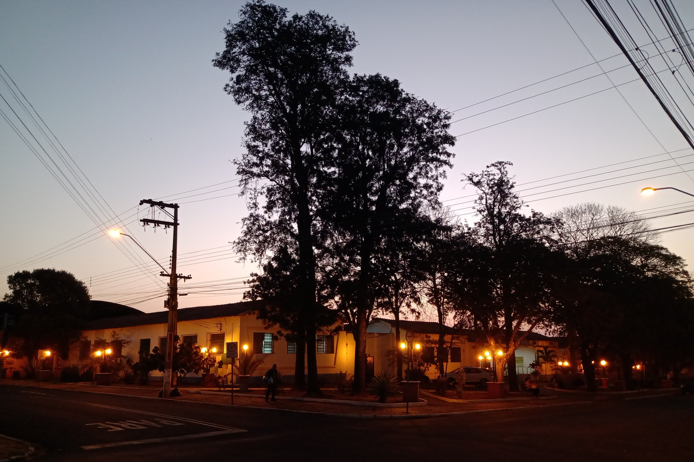

André Klaic
André Klaic
The greatest paradox of my life is that I enjoy being a generalist, yet I recognize greater potential for achievements in specialists.
This is reflected in my career path: I have worked with in vastly different fields, ranging from energy harvesting systems to market research.
The common thread running through all of this is data analysis, which has led me to various areas of interest, such as pattern recognition, predictive modeling and (why not) design.
This page is about all of that.
